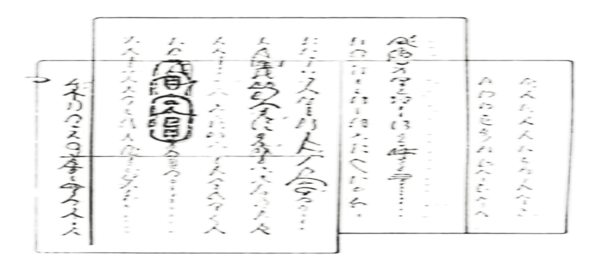

Research position
How can an object invite remembrance
without pretending to be a person?
TeleAbsence frames connection through traces, rituals and remembered
environments. We translate its principles into questions for interaction
design.
TELEABSENCE
DESIGNING
WITH
ABSENCE.
Memory, material and the feeling of connection.
Wind Phone / Itaru Sasaki · A ritual without a connected line.
Case evidence
Historical and cultural cases discussed by Ishii et al.
01 Hiroshima stone shadow —
Presence of Absence
02 Wind Phone / Itaru Sasaki —
Illusory Communication
03 Impact Steel —
Materiality of Memory
04 Miyazawa manuscript —
Traces of Reflection
05 Notre-Dame acoustic context —
Remote Time
What I carry forward
[1]
[2]
[3]
[4]
[5]
Let silence remain part of the experience.
Make initiation and stopping deliberate.
Anchor meaning in personal records and objects.
Preserve originals; separate later interpretation.
Let people choose when to revisit.
TRACE → ENCOUNTER → REFLECTION
user chooses to return
Where this project can go further
Move from evocative encounters to a legible everyday interaction: clear provenance,
adjustable intensity and an explicit ending. An everyday ritual grounded in personal records.
Five design principles
01
Presence of Absence
An absent body can remain
perceptible through an enduring
trace.
02
Illusory Communication
A familiar ritual can support felt
connection without an actual
reply.
03
Materiality of Memory
Physical objects retain
associations that a generic
interface cannot assume.
04
Traces of Reflection
Revisions and gestures reveal a
person’s process, not only a
finished message.
05
Remote Time
Sensory qualities can evoke a
past moment or a remembered
place.
Design questions
How can a tangible object connect us with absence?
How can familiar objects offer meaningful responses?
How can slow interaction evoke emotional resonance?
SPECTRAL FLUID / 02 RESEARCH CONTEXT
Source: Ishii et al., PRESENCE 34 (2025), §4.1–4.5, Figs. 2–6.
DOI: 10.1162/PRES_a_00441 ·

02 / CONCEPT TO DESIGN POSITION